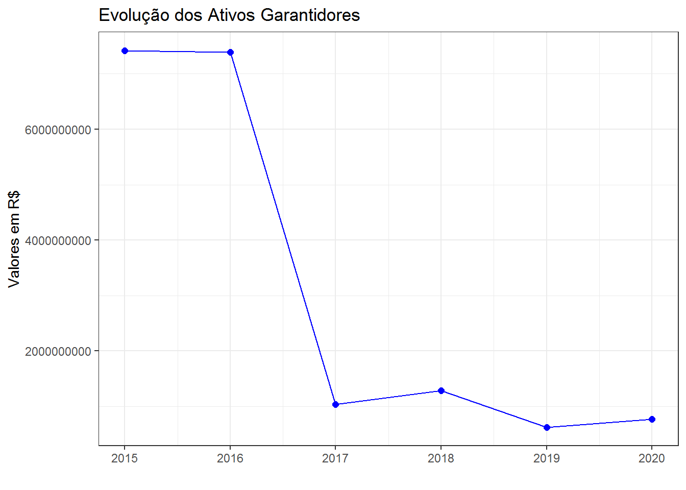
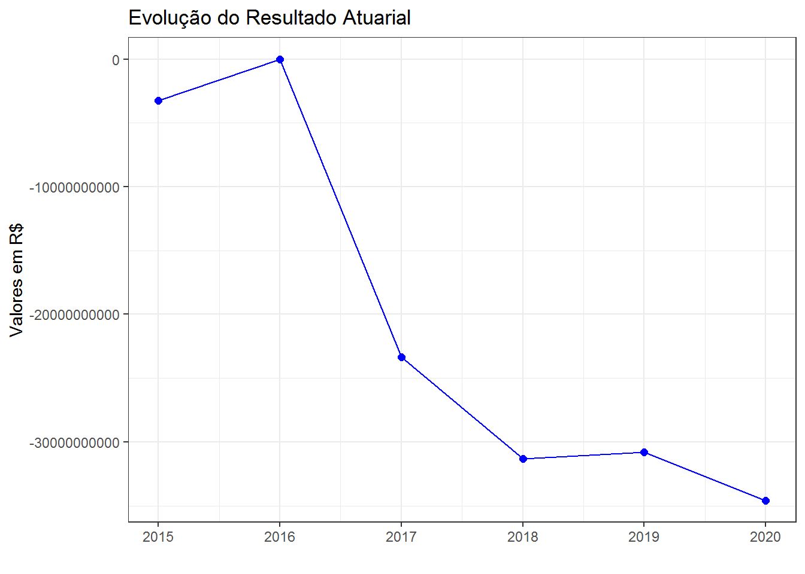
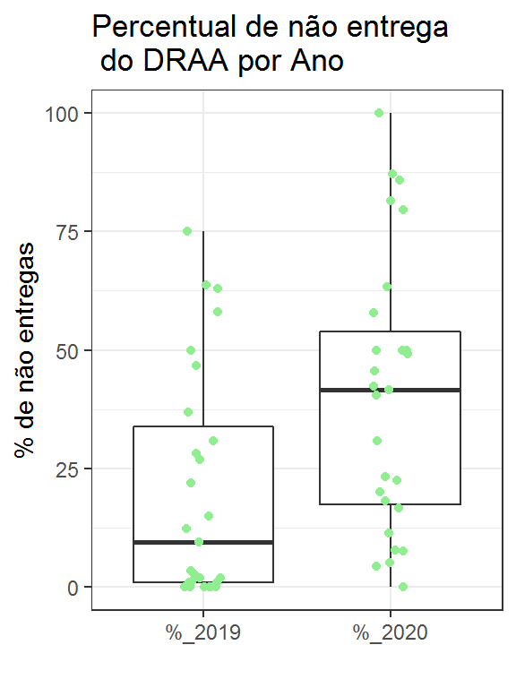

Capítulo 6 DRAA - Demonstrativo de Resultados da Avaliação Atuarial
O arquivo Valores Compromissos é um dos 29 disponibilizados pela SPREV em seu site contendo informações sobre o DRAA e será o objeto deste capítulo.
Esta é uma das bases de dados mais importantes publicadas pela SPREV, já que traz informações sobre os principais números dos RPPS no que diz respeito ao aspecto atuarial.
6.1 Importação dos dados
Os dados estão armazenados em um arquivo csv e o processo de importação não é muito diferente do que foi feito para os dados anteriores.
draa <- read_csv("dados/30 - Valores_Compromissos_Atualizacao_de_ago_set_2020_Em_2020-11-20T11_24_442020-11-20 11-24-58.csv",
locale=locale(encoding = "utf-8"),
col_types = cols())
head(draa)# A tibble: 6 x 13
CNPJ UF Ente Exercicio `Data de Envio` `Situacao do DRA~ `Tipo de Plano` `Tipo de Massa` `Codigo Dem. Res~ Descricao Categoria `Valor da Gerac~ `Valor da Gerac~
<chr> <chr> <chr> <dbl> <dttm> <chr> <chr> <chr> <dbl> <chr> <chr> <dbl> <dbl>
1 63606~ AC Govern~ 2015 2017-10-24 09:18:08 Documentos Digit~ Previdenciário Civil 109001 Valor Atual d~ Resultado 8103850488. 12650404309.
2 63606~ AC Govern~ 2015 2017-10-24 09:18:08 Documentos Digit~ Previdenciário Civil 500000 ATIVOS GARANT~ Titulo 207554162. NA
3 63606~ AC Govern~ 2015 2017-10-24 09:18:08 Documentos Digit~ Previdenciário Civil 500101 Aplicações em~ Resultado 176300301. NA
4 63606~ AC Govern~ 2015 2017-10-24 09:18:08 Documentos Digit~ Previdenciário Civil 500201 Aplicações em~ Resultado 29422058. NA
5 63606~ AC Govern~ 2015 2017-10-24 09:18:08 Documentos Digit~ Previdenciário Civil 500301 Aplicações em~ Resultado 1831803. NA
6 63606~ AC Govern~ 2015 2017-10-24 09:18:08 Documentos Digit~ Previdenciário Civil 500401 Aplicações em~ Resultado 0 NA Para facilitar o trabalho posterior com os dados faz-se a seguir a substituição dos nomes das colunas:
draa <- draa %>%
rename(cnpj = CNPJ,
uf = UF,
ente = Ente,
exercicio = Exercicio,
dt_envio = `Data de Envio`,
sit_draa = `Situacao do DRAA`,
tipo_plano = `Tipo de Plano`,
tipo_massa = `Tipo de Massa`,
codigo = `Codigo Dem. Result. Atuarial`,
descr = Descricao,
categoria = Categoria,
vlr_geracao_atual = `Valor da Geracao Atual`,
vlr_geracao_futura = `Valor da Geracao Futura`)Essa base de dados possui 13 colunas as quais serão exploradas um pouco mais a seguir.
6.2 Análise exploratória
Para uma boa análise é imprescindível conhecer bem a base de dados objeto de análise. Um bom ponto de partida é verificar os possíveis valores que algumas variáveis podem assumir.
Quais exercícios estão contemplados na base de dados?
# A tibble: 6 x 1
exercicio
<dbl>
1 2015
2 2016
3 2017
4 2018
5 2019
6 2020O resultado evidencia que a base de dados contém informações de 2015 a 2020, o que oferece a possibilidade de comparar valores por um período de seis anos o que é bem razoável.
Quais valores a variável sit_draa, que informa a situação do DRAA, pode assumir?
# A tibble: 7 x 1
sit_draa
<chr>
1 Documentos Digitalizados
2 Aguardando Certificado
3 Aguardando envio dos fluxos Atuariais
4 Aguardando Relatorio de Avaliacao Atuarial digitalizado
5 Fluxos Atuariais Rejeitados
6 Substituida Antes da Recepcao dos Arquivos Digitalizados
7 Retificado Após ser encaminhado à SPREV o DRAA assume diferentes status, sendo o status final Documentos Digitalizados. Aparentemente os status anteriores são intermediários e necessitam ainda de ações complementares por parte dos gestores ou da SPREV.
Ainda é necessário obter mais informações sobre o sigfinificado de cada um dos status e como podem influenciar no resultado de uma análise.
A obtenção dos valores possíveis das variáveis codigo, descr e categoria pode ser feita da seguinte forma:
tab_codigos <- draa %>%
select(codigo, descr, categoria) %>%
distinct() %>%
arrange(codigo)
head(tab_codigos)# A tibble: 6 x 3
codigo descr categoria
<dbl> <chr> <chr>
1 109001 Valor Atual dos Salários Futuros Resultado
2 110000 VALOR ATUAL DAS CONTRIBUIÇÕES FUTURAS E COMPENSAÇÕES A RECEBER - BENEFÍCIOS CONCEDIDOS Titulo
3 111000 Benefícios Concedidos - Contribuições Futuras dos Aposentados Resultado
4 112000 Benefícios Concedidos - Contribuições Futuras dos Pensionistas Resultado
5 119900 Benefícios Concedidos - Compensação Previdenciária a Receber Resultado
6 120000 VALOR ATUAL DAS CONTRIBUIÇÕES FUTURAS E COMPENSAÇÕES A RECEBER - BENEFÍCIOS A CONCEDER: Titulo Para ver os títulos, é só filtrar:
# A tibble: 13 x 3
codigo descr categoria
<dbl> <chr> <chr>
1 110000 VALOR ATUAL DAS CONTRIBUIÇÕES FUTURAS E COMPENSAÇÕES A RECEBER - BENEFÍCIOS CONCEDIDOS Titulo
2 120000 VALOR ATUAL DAS CONTRIBUIÇÕES FUTURAS E COMPENSAÇÕES A RECEBER - BENEFÍCIOS A CONCEDER: Titulo
3 130000 PROVISÃO MATEMÁTICA PARA COBERTURA DE INSUFICIÊNCIAS FINANCEIRAS ASSEGURADA POR LEI: Titulo
4 210000 VALOR ATUAL DOS BENEFÍCIOS FUTUROS - ENCARGOS DE BENEFÍCIOS CONCEDIDOS Titulo
5 220000 VALOR ATUAL DOS BENEFÍCIOS FUTUROS - ENCARGOS DE BENEFÍCIOS A CONCEDER: Titulo
6 300000 PROVISÃO MATEMÁTICA DOS BENEFÍCIOS CONCEDIDOS Titulo
7 400000 PROVISÃO MATEMÁTICA DOS BENEFÍCIOS A CONCEDER : Titulo
8 500000 ATIVOS GARANTIDORES DOS COMPROMISSOS DO PLANO DE BENEFÍCIOS Titulo
9 600000 RESULTADO ATUARIAL Titulo
10 700000 DESTINAÇÃO DO RESULTADO Titulo
11 800000 FUNDOS CONSTITUÍDOS Titulo
12 900000 RECEITAS E DESPESAS ESTIMADAS PARA O EXERCÍCIO Titulo
13 900900 RESULTADO FINANCEIRO ESTIMADO PARA O EXERCÍCIO Titulo Essa base de dados fornece muitas informações sobre o RPPS, algumas das quais guardando relação com as variáveis do fluxo atuarial, que é o objeto do Capítulo 9, com as quais poderão ser comparadas, o que será objeto de um capítulo específico.
Para identificar quais são as rubricas que compõem um determinado título, por exemplo Ativos Garantidores, pode-se utilizar o seguinte comando:
# A tibble: 7 x 3
codigo descr categoria
<dbl> <chr> <chr>
1 500000 ATIVOS GARANTIDORES DOS COMPROMISSOS DO PLANO DE BENEFÍCIOS Titulo
2 500101 Aplicações em Segmento de Renda Fixa - RPPS Resultado
3 500201 Aplicações em Segmento de Renda Variável - RPPS Resultado
4 500301 Aplicações em Segmento Imobiliário - RPPS Resultado
5 500401 Aplicações em Enquadramento - RPPS Resultado
6 500501 Títulos e Valores não Sujeitos ao Enquadramento - RPPS Resultado
7 509001 Demais Bens, direitos e ativos ResultadoPara obter as variáveis que compõem o título 210000, a solução é muito parecida.
# 210000 VALOR ATUAL DOS BENEFÍCIOS FUTUROS - ENCARGOS DE BENEFÍCIOS CONCEDIDOS
tab_codigos %>%
filter(grepl("^21", codigo))# A tibble: 7 x 3
codigo descr categoria
<dbl> <chr> <chr>
1 210000 VALOR ATUAL DOS BENEFÍCIOS FUTUROS - ENCARGOS DE BENEFÍCIOS CONCEDIDOS Titulo
2 211000 Benefícios Concedidos - Encargos - Aposentadorias Programadas Resultado
3 212000 Benefícios Concedidos - Encargos - Aposentadorias Especiais de Professores Resultado
4 213000 Benefícios Concedidos - Encargos - Outras Aposentadorias Especiais Resultado
5 214000 Benefícios Concedidos - Encargos - Aposentadorias por Invalidez Resultado
6 215000 Benefícios Concedidos - Encargos - Pensões Por Morte Resultado
7 219900 Benefícios Concedidos - Encargos - Compensação Previdenciária a Pagar ResultadoA base de dados apresenta ainda as variáveis vlr_geracao_atual e vlr_geracao_futura.
A variável vlr_geracao_atual apresenta os valores das variáveis identificadas em cada codigo considerando apenas o geração atual, ou seja, não se considera o ingresso de novos servidores no plano. Já a variável vlr_geracao_futura considera o ingresso de novos servidores no plano.
As análises realizadas neste documento consideram apenas os valores relativos à geração atual, ou seja, a variável vlr_geracao_atual.
6.3 Evolução de variáveis
Uma primeira verificação que é possível fazer é acompanhar a evolução de uma ou mais variáveis ao longo desses seis períodos para um determinado RPPS.
Por exemplo, como evoluiu os ativos garantidores do RPPS do município do Rio de Janeiro no período?
Vamos aplicar um filtro à base de dados para pegar os registros de interesse:
options(scipen = 999)
draa_ente <- draa %>%
filter(uf == "RJ",
ente == "Rio de Janeiro",
codigo == 500000,
tipo_massa == "Civil") %>%
select(ente, exercicio, dt_envio, sit_draa, tipo_plano, vlr_geracao_atual)
head(draa_ente)# A tibble: 6 x 6
ente exercicio dt_envio sit_draa tipo_plano vlr_geracao_atual
<chr> <dbl> <dttm> <chr> <chr> <dbl>
1 Rio de Janeiro 2015 2016-12-13 10:41:47 Documentos Digitalizados Previdenciário 7421387367.
2 Rio de Janeiro 2016 2016-12-27 12:36:41 Documentos Digitalizados Previdenciário 7388264506.
3 Rio de Janeiro 2017 2018-01-19 16:19:52 Documentos Digitalizados Previdenciário 1037551333.
4 Rio de Janeiro 2018 2018-08-10 13:51:52 Documentos Digitalizados Previdenciário 1289594411.
5 Rio de Janeiro 2019 2019-05-28 16:41:36 Documentos Digitalizados Previdenciário 627338430.
6 Rio de Janeiro 2020 2020-10-06 10:54:16 Aguardando Certificado Previdenciário 771929483.Algumas observações em relação a saída. O RPPS do município do Rio de Janeiro não possui segregação de massas e o DRAA de 2020 está com o status Aguardando Certificado.
Feito o filtro, podemos agora elaborar um gráfico simples para se ter uma ideia da tendência de evolução dos ativos garantidores.
ggplot(draa_ente, aes(x=exercicio, y=vlr_geracao_atual)) +
geom_line(color="blue") +
geom_point(size = 2, color="blue") +
labs(title="Evolução dos Ativos Garantidores",
y="Valores em R$",
x="") +
theme_bw()
E o resultado atuarial? Como vem evoluindo ao longo desses seis anos?
draa_ente <- draa %>%
filter(uf == "RJ",
ente == "Rio de Janeiro",
grepl("^6", codigo),
tipo_massa == "Civil",
!is.na(vlr_geracao_atual)) %>%
select(ente, exercicio, codigo, vlr_geracao_atual)
draa_ente# A tibble: 6 x 4
ente exercicio codigo vlr_geracao_atual
<chr> <dbl> <dbl> <dbl>
1 Rio de Janeiro 2015 600100 -3240844243.
2 Rio de Janeiro 2016 600200 0
3 Rio de Janeiro 2017 600100 -23344205780.
4 Rio de Janeiro 2018 600100 -31324856003.
5 Rio de Janeiro 2019 600100 -30824868662.
6 Rio de Janeiro 2020 600100 -34576248732.Interessante notar que em 2016 o resultado atuarial foi nulo. Um gráfico vai ajudar a entender o que está acontecendo.
ggplot(draa_ente, aes(x=exercicio, y=vlr_geracao_atual)) +
geom_line(color="blue") +
geom_point(size = 2, color="blue") +
labs(title="Evolução do Resultado Atuarial",
y="Valores em R$",
x="") +
theme_bw()
Vê-se claramente uma tendência de deterioração do resultado atuarial.
Mas também pode ser interessante olhar a qualidade dos ativos que o RPPS possui em carteira para honrar os compromissos. Assim, o código a seguir mostra uma tabela com a participação de cada tipo de ativo ao longo dos anos.
draa_ente <- draa %>%
filter(uf == "RJ",
ente == "Rio de Janeiro",
grepl("^5", codigo),
tipo_massa == "Civil",
!is.na(vlr_geracao_atual)) %>%
select(exercicio, descr, codigo, vlr_geracao_atual) %>%
mutate(descr = case_when(codigo == 500000 ~ "Total",
codigo == 500101 ~ "Renda Fixa",
codigo == 500201 ~ "Renda Variável",
codigo == 500301 ~ "Imóveis",
codigo == 500401 ~ "Em Enquadramento",
codigo == 500501 ~ "Não Suj. a Enquad.",
codigo == 509001 ~ "Outros"))
draa_ente# A tibble: 42 x 4
exercicio descr codigo vlr_geracao_atual
<dbl> <chr> <dbl> <dbl>
1 2015 Total 500000 7421387367.
2 2015 Renda Fixa 500101 0
3 2015 Renda Variável 500201 0
4 2015 Imóveis 500301 0
5 2015 Em Enquadramento 500401 0
6 2015 Não Suj. a Enquad. 500501 0
7 2015 Outros 509001 7421387367.
8 2016 Total 500000 7388264506.
9 2016 Renda Fixa 500101 0
10 2016 Renda Variável 500201 0
# ... with 32 more rowsdraa_ente %>%
pivot_wider(id_cols = c(codigo, descr),
names_from = exercicio,
values_from = vlr_geracao_atual) %>%
qflextable() %>%
fontsize(part = "body", size = 10) %>%
bold(i = 1)codigo | descr | 2015 | 2016 | 2017 | 2018 | 2019 | 2020 |
500.000 | Total | 7.421.387.367 | 7.388.264.506 | 1.037.551.333 | 1.289.594.411 | 627.338.430 | 771.929.483 |
500.101 | Renda Fixa | 0 | 0 | 26.255.037 | 50.466.677 | 46.881.335 | 0 |
500.201 | Renda Variável | 0 | 0 | 0 | 0 | 0 | 0 |
500.301 | Imóveis | 0 | 0 | 928.026.000 | 497.846.000 | 564.274.000 | 762.749.100 |
500.401 | Em Enquadramento | 0 | 0 | 0 | 0 | 0 | 0 |
500.501 | Não Suj. a Enquad. | 0 | 0 | 0 | 0 | 0 | 0 |
509.001 | Outros | 7.421.387.367 | 7.388.264.506 | 83.270.296 | 741.281.734 | 16.183.095 | 9.180.383 |
Parece que a situação não é muito favorável ao RPPS em análise. Além de experimentar uma brutal descapitalização no período, o perfil de alocação dos recursos caminha para imóveis e ativos sem classificação específica, cuja liquidez talvez não seja das melhores.
Diversas outras análises podem ser feitas. À medida que o tempo permitir serão feitas novas inclusões.
6.4 Encaminhamento do DRAA à SPREV
Uma outra análise possível e interessante é verificar se os RPPS estão encaminhando com regularidade o DRAA à SPREV.
Para ajudar nesse acompanhamento, é possível elaborar uma tabela que indica para cada UF e para os anos de 2019 e 2020 qual o percentual de RPPS da UF não entregararam o DRAA.
tab <- draa %>%
filter(exercicio %in% c(2019, 2020),
tipo_plano == "Previdenciário",
tipo_massa == "Civil") %>%
select(cnpj, ente, uf, exercicio, dt_envio) %>%
group_by(cnpj, exercicio) %>%
filter(dt_envio == max(dt_envio)) %>%
ungroup() %>%
distinct() %>%
mutate(dt_envio = format(dt_envio, "%b%Y")) %>%
pivot_wider(names_from = exercicio, values_from = dt_envio)
head(tab, 10)# A tibble: 10 x 5
cnpj ente uf `2019` `2020`
<chr> <chr> <chr> <chr> <chr>
1 63606479000124 Governo do Estado do Acre AC mai2019 <NA>
2 04034583000122 Rio Branco AC jul2019 ago2020
3 12198693000158 Arapiraca AL mai2019 <NA>
4 12200143000126 Atalaia AL ago2020 <NA>
5 12250163000101 Belo Monte AL mai2019 <NA>
6 12227971000158 Cacimbinhas AL mai2020 jun2020
7 01631604000107 Campestre AL out2019 jul2020
8 12264230000147 Coruripe AL ago2019 ago2020
9 08439549000199 Craíbas AL abr2019 <NA>
10 12200176000176 Governo do Estado de Alagoas AL jun2019 jul2020Essa tabela ainda não é o que se deseja, mas já é possivel identificar os RPPS de uma determinada UF que encaminharam (ou não) o DRAA nos dois anos considerados.
Como está o ERJ?
# A tibble: 69 x 5
cnpj ente uf `2019` `2020`
<chr> <chr> <chr> <chr> <chr>
1 29172467000109 Angra dos Reis RJ jul2019 jul2020
2 36288900000123 Aperibé RJ <NA> out2020
3 28531762000133 Araruama RJ jun2020 jun2020
4 39554605000160 Areal RJ mai2019 abr2020
5 01616171000102 Armação dos Búzios RJ jan2020 jul2020
6 27792373000107 Arraial do Cabo RJ mai2019 jul2020
7 28576080000147 Barra do Piraí RJ jun2020 <NA>
8 39485438000142 Belford Roxo RJ jul2019 <NA>
9 28561041000176 Bom Jardim RJ mai2019 jul2020
10 29111085000167 Cambuci RJ mai2019 ago2020
# ... with 59 more rowsChama-se a atenção para um ponto: se o RPPS não encaminhou o DRAA à SPREV nos anos de 2019 e 2020 ele não aparecerá na tabela acima e, consequentemente, não será considerado na contagem do total de RPPS da UF no ano.
Para contornar este inconveniente é necessário incluir na base os RPPS que eventualmente estejam faltando.
Para isso será necessário utilizar a base de dados de cadastro dos RPPS já estudada no Capítulo 1. O código a seguir faz a importação da mesma:
cadastro_rpps <- read_excel("dados/4-regime-entes-federativos_atualizacao_de_ago_set_2020_extracao_em_2020-10-06t18_17_11.xlsx") %>%
filter(REGIME == "RPPS") # Exclui RGPS e RPPS em Extinção
head(cadastro_rpps)# A tibble: 6 x 4
CNPJ UF ENTE REGIME
<chr> <chr> <chr> <chr>
1 63606479000124 AC Governo do Estado do Acre RPPS
2 04034583000122 AC Rio Branco RPPS
3 12198693000158 AL Arapiraca RPPS
4 12200143000126 AL Atalaia RPPS
5 12262713000102 AL Barra de Santo Antônio RPPS
6 12250056000183 AL Batalha RPPS Agora é necessário juntar essa base de dados com a tabela construída acima.
tab2 <- left_join(cadastro_rpps[, c("CNPJ", "ENTE","UF")],
tab[, c("cnpj", "2019", "2020")],
by = c("CNPJ" = "cnpj"))
head(tab2, 10)# A tibble: 10 x 5
CNPJ ENTE UF `2019` `2020`
<chr> <chr> <chr> <chr> <chr>
1 63606479000124 Governo do Estado do Acre AC mai2019 <NA>
2 04034583000122 Rio Branco AC jul2019 ago2020
3 12198693000158 Arapiraca AL mai2019 <NA>
4 12200143000126 Atalaia AL ago2020 <NA>
5 12262713000102 Barra de Santo Antônio AL <NA> <NA>
6 12250056000183 Batalha AL <NA> <NA>
7 12227641000162 Belém AL <NA> <NA>
8 12250163000101 Belo Monte AL mai2019 <NA>
9 12264396000163 Boca da Mata AL <NA> <NA>
10 12332995000177 Branquinha AL <NA> <NA> O resultado acima evidencia que foram acrescidos RPPS que apresentam valores NA tanto para o ano de 2019 quanto para o ano de 2020. Ou seja, não entregaram o DRAA em nenhum dos dois anos. Quem são esses RPPS? Algum no ERJ?
# A tibble: 11 x 5
CNPJ ENTE UF `2019` `2020`
<chr> <chr> <chr> <chr> <chr>
1 28695658000184 Barra Mansa RJ <NA> <NA>
2 28549483000105 Cabo Frio RJ <NA> <NA>
3 29128766000138 Cachoeiras de Macacu RJ <NA> <NA>
4 29116894000161 Campos dos Goytacazes RJ <NA> <NA>
5 01615882000162 Iguaba Grande RJ <NA> <NA>
6 29138302000102 Itaguaí RJ <NA> <NA>
7 29138351000145 Magé RJ <NA> <NA>
8 04132090000125 Mesquita RJ <NA> <NA>
9 28741072000109 Rio Bonito RJ <NA> <NA>
10 28741098000157 Silva Jardim RJ <NA> <NA>
11 29138369000147 Teresópolis RJ <NA> <NA> Onze RPPS nessa situação!
A seguir, o código para preparar a tabela desejada.
tab3 <- tab2 %>%
group_by(UF) %>%
summarize(n_rpps = n(),
`%_2019` = round(sum(is.na(`2019`)) / n() * 100, 1),
`%_2020` = round(sum(is.na(`2020`)) / n() * 100, 1)) %>%
arrange(desc(n_rpps))
tab3 %>%
qflextable() UF | n_rpps | %_2019 | %_2020 |
RS | 332 | 0,9 | 5,1 |
MG | 222 | 12,2 | 45,5 |
SP | 222 | 1,8 | 11,3 |
PR | 179 | 1,1 | 30,7 |
GO | 171 | 9,4 | 40,4 |
PE | 149 | 2,7 | 18,1 |
MT | 107 | 0,9 | 7,5 |
RJ | 80 | 15,0 | 22,5 |
AL | 74 | 58,1 | 79,7 |
PB | 71 | 26,8 | 42,3 |
PI | 71 | 28,2 | 85,9 |
SC | 70 | 0,0 | 4,3 |
CE | 65 | 30,8 | 49,2 |
MS | 52 | 1,9 | 7,7 |
MA | 47 | 63,8 | 87,2 |
RN | 41 | 22,0 | 41,5 |
BA | 38 | 36,8 | 57,9 |
ES | 35 | 0,0 | 20,0 |
PA | 30 | 46,7 | 63,3 |
RO | 30 | 0,0 | 16,7 |
TO | 30 | 3,3 | 23,3 |
AM | 27 | 63,0 | 81,5 |
AP | 4 | 75,0 | 100,0 |
SE | 4 | 50,0 | 50,0 |
AC | 2 | 0,0 | 50,0 |
RR | 2 | 0,0 | 50,0 |
DF | 1 | 0,0 | 0,0 |
O quadro acima contem as informações desejadas. A seguir, um pequeno gráfico para visualizar a distribuição do percentual de não entrega do DRAA por unidade da federação.
tab3 %>%
pivot_longer(cols=c(`%_2019`, `%_2020`),
names_to = "ano",
values_to = "nao_entregas") %>%
ggplot(aes(x=ano, y=nao_entregas)) +
geom_boxplot() +
geom_jitter(color="lightgreen", width = 0.1) +
labs(title = "Percentual de não entrega\n do DRAA por Ano",
y = "% de não entregas",
x = "") +
theme_bw()
6.5 Balanço atuarial
Nesta sessão, o objetivo é elaborar um quadro que contenha os principais resultados atuariais com os dados existentes na base de dados.
Primeiro define-se as variáveis de interesse, ou seja, as que constarão do quadro a ser elaborado. Isso é feito a seguir:
# Definição das contas que compõem o Balanço Atuarial do plano preividenciário
contas_interesse <- c(500101, 500201, 500301, 500401, 500501, 509001,
130201, 210000, 110000, 220000, 120000, 130101)Definidas as variáveis de interesse, aplica-se um filtro à base de dados, com o objetivo de obtê-las e, na sequência, faz-se a modificação de seus nomes para maior comodidade na elaboração do quadro:
# Pega só os registros contendo os códigos de interesse
draa_ba<- draa %>%
filter(codigo %in% contas_interesse,
tipo_massa == "Civil",
uf == "RJ",
ente == "Rio de Janeiro",
tipo_plano == "Previdenciário",
exercicio %in% c(2019, 2020)) %>%
select(codigo, exercicio, vlr_geracao_atual) %>%
mutate(titulos = case_when(codigo == 500101 ~ "Renda Fixa",
codigo == 500201 ~ "Renda Variável",
codigo == 500301 ~ "Segmento Imobiliário",
codigo == 500401 ~ "Ativos em Enquadramento",
codigo == 500501 ~ "Títulos e Valores não Suj. a Enq.",
codigo == 509001 ~ "Demais Bens, Direitos e Ativos",
codigo == 130201 ~ "VP Parcelamentos",
codigo == 210000 ~ "VPBF_BC",
codigo == 110000 ~ "(-) VPCF_BC",
codigo == 220000 ~ "VPBF_BaC",
codigo == 120000 ~ "(-) VPCF_BaC",
codigo == 130101 ~ "VP Plano de Amortização Vigente")) %>%
select(codigo, titulos, exercicio, vlr_geracao_atual) %>%
pivot_wider(id_cols = c(codigo, titulos),
names_from=exercicio,
values_from=vlr_geracao_atual) %>%
mutate(var = round((`2020` / `2019` - 1) * 100, 2)) %>%
slice(9, 10, 7, 8, 11, 1:6, 12)
draa_ba %>%
qflextable()codigo | titulos | 2019 | 2020 | var |
220.000 | VPBF_BaC | 31.651.588.410 | 37.597.196.212 | 18,78 |
120.000 | (-) VPCF_BaC | 14.350.097.317 | 16.984.756.984 | 18,36 |
210.000 | VPBF_BC | 52.243.965.981 | 53.217.085.076 | 1,86 |
110.000 | (-) VPCF_BC | 1.638.564.942 | 1.773.342.006 | 8,23 |
130.101 | VP Plano de Amortização Vigente | 36.454.685.041 | 36.708.004.082 | 0,69 |
500.101 | Renda Fixa | 46.881.335 | 0 | -100,00 |
500.201 | Renda Variável | 0 | 0 | |
500.301 | Segmento Imobiliário | 564.274.000 | 762.749.100 | 35,17 |
500.401 | Ativos em Enquadramento | 0 | 0 | |
500.501 | Títulos e Valores não Suj. a Enq. | 0 | 0 | |
509.001 | Demais Bens, Direitos e Ativos | 16.183.095 | 9.180.383 | -43,27 |
130.201 | VP Parcelamentos | 0 | 0 |
A tabela ainda precisa de algum polimento mas já dá pra ver o esqueleto. Em versões posterioes do documento ela será melhorada.
Caso o RPPS possua segregação de massas, basta substituir no filtro o tipo de plano para Financeiro.